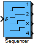

| Inports
| |
| Start | Start signal. Rising flank triggers sequence |
| Outports
| |
| Out1 | Output #1 |
| Out2 | Output #2 |
| Out3 | Output #3 |
| Out4 | Output #4 |
| Mask Parameters | |
| Delay1 | Time delay for output 1 |
| Delay2 | Time delay for output 2 |
| Delay3 | Time delay for output 3 |
| Delay4 | Time delay for output 4 |
| ts_fact | Multiplication factor of base sampling time (in integer format) |
Generation of time delayed (enable) sequence.
| FiP8 | 8 Bit Fixed Point Implementation |
| FiP16 | 16 Bit Fixed Point Implementation |
| FiP32 | 32 Bit Fixed Point Implementation |
| Float32 | 32 Bit Floating Point Implementation |
| Float64 | 64 Bit Floating Point Implementation |
8 Bit Fixed Point Implementation
| Inports Data Type
| |
| Start | int8 |
| Outports Data Type
| |
| Out1 | int8 |
| Out2 | int8 |
| Out3 | int8 |
| Out4 | int8 |
16 Bit Fixed Point Implementation
| Inports Data Type
| |
| Start | int16 |
| Outports Data Type
| |
| Out1 | int16 |
| Out2 | int16 |
| Out3 | int16 |
| Out4 | int16 |
32 Bit Fixed Point Implementation
| Inports Data Type
| |
| Start | int32 |
| Outports Data Type
| |
| Out1 | int32 |
| Out2 | int32 |
| Out3 | int32 |
| Out4 | int32 |
32 Bit Floating Point Implementation
| Inports Data Type
| |
| Start | float32 |
| Outports Data Type
| |
| Out1 | float32 |
| Out2 | float32 |
| Out3 | float32 |
| Out4 | float32 |
64 Bit Floating Point Implementation
| Inports Data Type
| |
| Start | float64 |
| Outports Data Type
| |
| Out1 | float64 |
| Out2 | float64 |
| Out3 | float64 |
| Out4 | float64 |